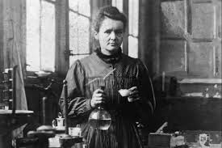

MARIE CURIE

Científica especializada en energía nuclear. Descubrió el Polonio y el radio, dos materiales muy radiactivos, con lo que estuvo mucho tiempo expuesta a este tipo de radiación
¿Cual fue su enfermedad?
Gripe infecciosa
Contaminación por radiación
Muerte por accidente de tráfico